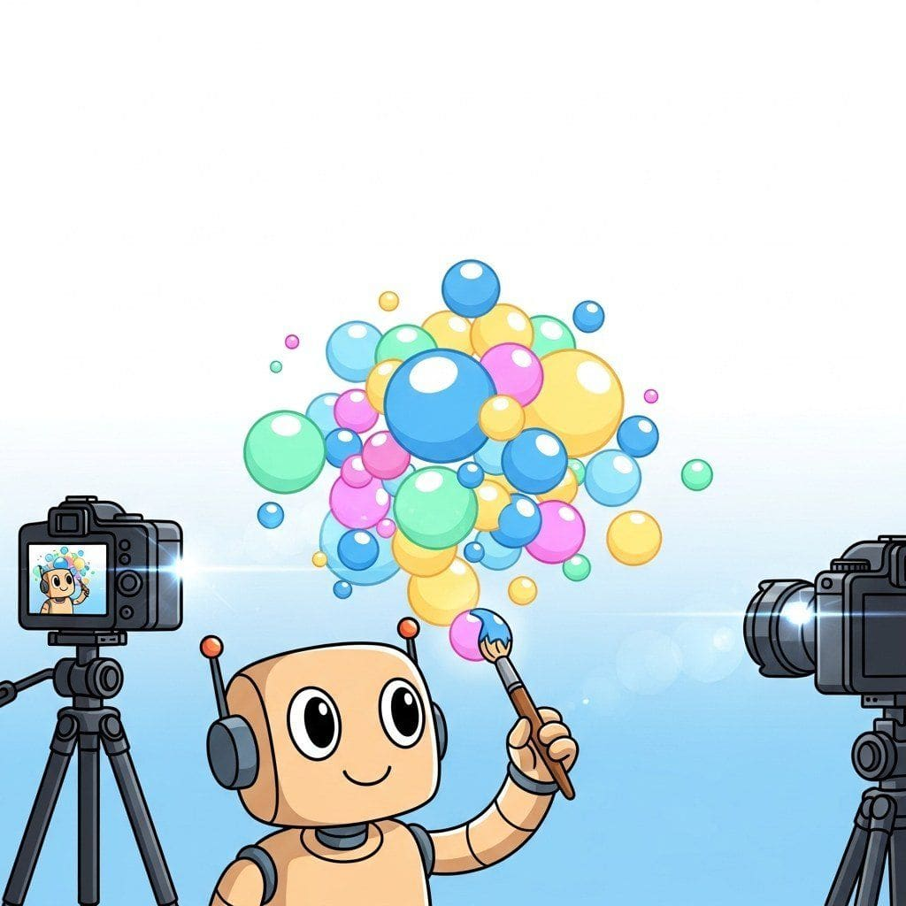

Big Picture
3D Gaussian Splatting, NeRF, Stable Zero123, Trellis, 4D splats, and scene relighting.
Sections
- 23.1 3D Gaussian Splatting Fundamentals Mathematical foundations, training, COLMAP preprocessing, and dynamic splat extensions. Entry
- 23.2 4D & Dynamic Splats Temporal extensions of 3D Gaussian Splatting: 4DGS, Dynamic 3D Gaussians, Deformable 3DGS, Spacetime Gaussians. Intermediate
- 23.3 Image-to-3D: Stable Zero123 & Multi-View Diffusion Zero123, Stable Zero123, MVDream, and the multi-view diffusion paradigm for single-image 3D reconstruction. Intermediate
- 23.4 Direct 3D Diffusion: Trellis & Structured Latents Trellis, GaussianAnything, Latent NeRF, and the wave of native 3D generative models. Advanced
- 23.5 Scene Relighting & 3D Editing Inverse rendering, IC-Light, NeRF-Editing, and language-grounded 3D scene manipulation. Advanced